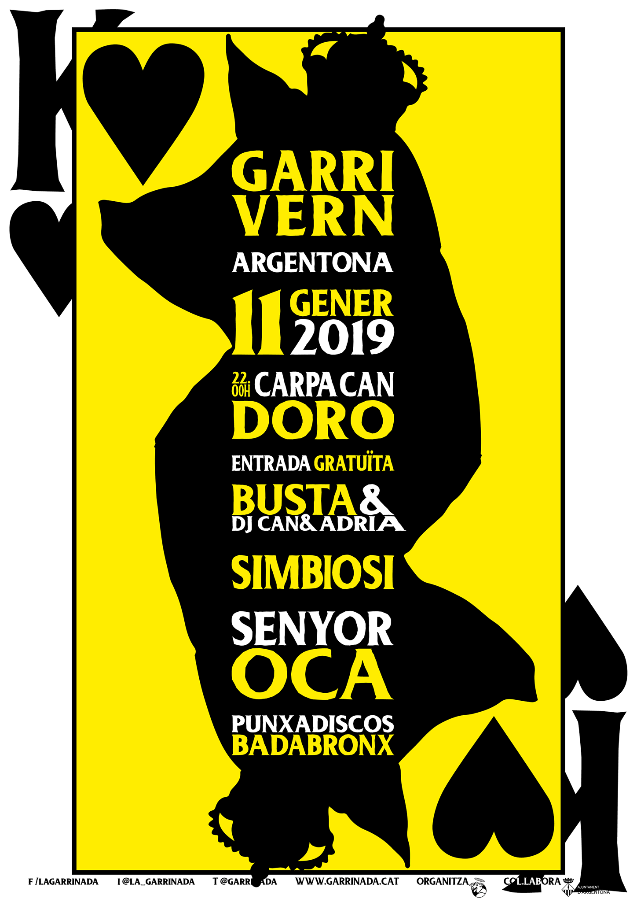

Garrivern 2019
Argentona
Festa Major de Sant Julià
Divendres 11 de gener 22:00h
Carpa a Cal Guardià (Can Doro)
Entrada gratuïta

Busta & DJ Can & Adrià
Simbiosi
Reggae-Fusió. Guanyadors del concurs de música jove del Maresme
Senyor Oca
Hip-hop, Drum'n'Bass
PD Badabronx
International Patxanga. Resident Sala 2 del Clap